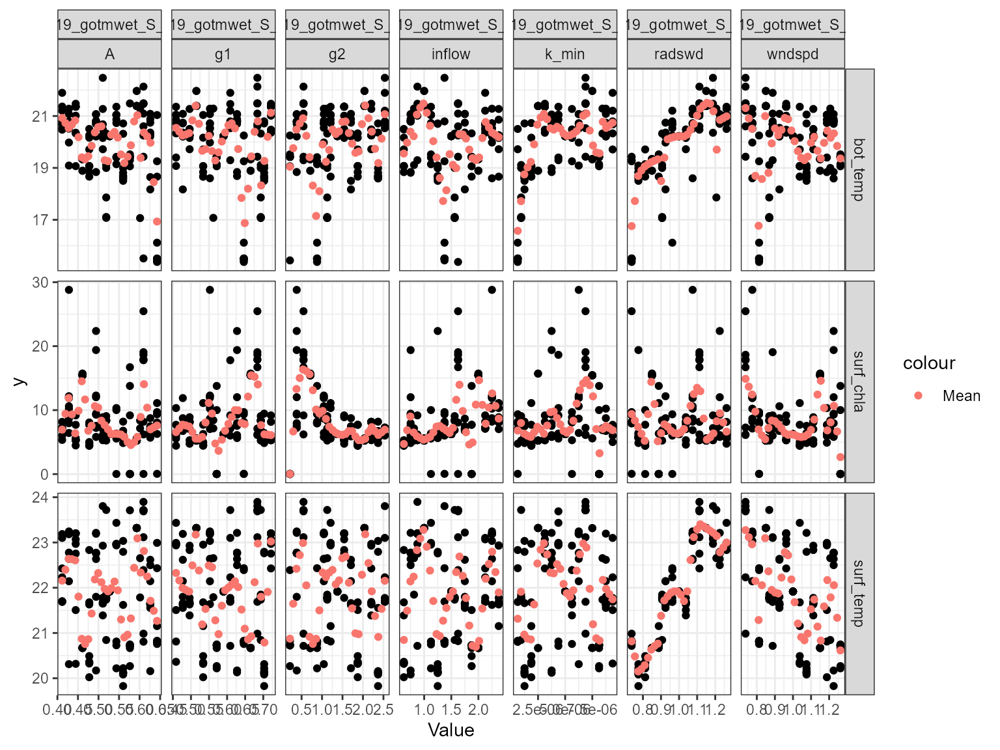

Setup
First, we will load the AEME and aemetools
package:
Create a folder for running the example calibration setup.
tmpdir <- "sa-test"
dir.create(tmpdir, showWarnings = FALSE)
aeme_dir <- system.file("extdata/lake/", package = "AEME")
# Copy files from package into tempdir
file.copy(aeme_dir, tmpdir, recursive = TRUE)
#> [1] TRUE
path <- file.path(tmpdir, "lake")
list.files(path, recursive = TRUE)
#> [1] "aeme.yaml" "data/catchment.dbf" "data/catchment.prj"
#> [4] "data/catchment.shp" "data/catchment.shx" "data/hypsograph.csv"
#> [7] "data/inflow_FWMT.csv" "data/lake.dbf" "data/lake.prj"
#> [10] "data/lake.shp" "data/lake.shx" "data/lake_obs.csv"
#> [13] "data/meteo.csv" "data/outflow.csv" "data/water_level.csv"
#> [16] "model_controls.csv"Build AEME ensemble
Using the AEME functions, we will build the AEME model
setup. For this example, we will use the glm_aed model. The
build_aeme function will
aeme <- yaml_to_aeme(path = path, "aeme.yaml")
model_controls <- AEME::get_model_controls()
inf_factor = c("dy_cd" = 1, "glm_aed" = 1, "gotm_wet" = 1)
outf_factor = c("dy_cd" = 1, "glm_aed" = 1, "gotm_wet" = 1)
model <- c("gotm_wet")
aeme <- build_aeme(path = path, aeme = aeme,
model = model, model_controls = model_controls,
inf_factor = inf_factor, ext_elev = 5,
use_bgc = TRUE)Description of Sensitivity Analysis method
The sensitivity analysis method used here is based on the Sobol
method and uses the sensobol package.
This package provides several functions to conduct variance-based uncertainty and sensitivity analysis, from the estimation of sensitivity indices to the visual representation of the results. It implements several state-of-the-art first and total-order estimators and allows the computation of up to fourth-order effects, as well as of the approximation error, in a swift and user-friendly way.
For more information on the method, see the sensobol package vignette.
Load parameters to be used for the sensitivity analysis
Parameters are loaded from the aemetools package within
the aeme_parameters dataframe. The parameters are stored in
a data frame with the following columns:
model: The model namefile: The file name of the model parameter filename: The parameter namevalue: The parameter valuemin: The minimum value of the parametermax: The maximum value of the parameter
Parameters to be used for the calibration. (man)
utils::data("aeme_parameters", package = "AEME")
param <- aeme_parameters |>
dplyr::filter(file != "wdr")
param| model | file | name | value | min | max | module | group |
|---|---|---|---|---|---|---|---|
| glm_aed | glm3.nml | light/Kw | 5.8e-01 | 0.100 | 5.52e+00 | hydrodynamic | NA |
| glm_aed | met | MET_wndspd | 1.0e+00 | 0.700 | 1.30e+00 | hydrodynamic | NA |
| glm_aed | met | MET_radswd | 1.0e+00 | 0.700 | 1.30e+00 | hydrodynamic | NA |
| glm_aed | glm3.nml | mixing/coef_mix_conv | 1.4e-01 | 0.100 | 2.00e-01 | hydrodynamic | NA |
| glm_aed | glm3.nml | mixing/coef_wind_stir | 2.1e-01 | 0.200 | 3.00e-01 | hydrodynamic | NA |
| glm_aed | glm3.nml | mixing/coef_mix_shear | 1.4e-01 | 0.100 | 2.00e-01 | hydrodynamic | NA |
| glm_aed | glm3.nml | mixing/coef_mix_turb | 5.6e-01 | 0.200 | 7.00e-01 | hydrodynamic | NA |
| glm_aed | glm3.nml | mixing/coef_mix_hyp | 7.4e-01 | 0.400 | 8.00e-01 | hydrodynamic | NA |
| glm_aed | inf | inflow | 1.0e+00 | 0.500 | 2.50e+00 | hydrodynamic | NA |
| gotm_wet | gotm.yaml | turbulence/turb_param/k_min | 6.0e-07 | 0.000 | 1.00e-05 | hydrodynamic | NA |
| gotm_wet | gotm.yaml | light_extinction/A/constant_value | 5.5e-01 | 0.395 | 6.59e-01 | hydrodynamic | NA |
| gotm_wet | gotm.yaml | light_extinction/g1/constant_value | 5.9e-01 | 0.440 | 7.40e-01 | hydrodynamic | NA |
| gotm_wet | gotm.yaml | light_extinction/g2/constant_value | 2.0e-01 | 0.050 | 2.70e+00 | hydrodynamic | NA |
| gotm_wet | met | MET_wndspd | 1.0e+00 | 0.700 | 1.30e+00 | hydrodynamic | NA |
| gotm_wet | met | MET_radswd | 1.0e+00 | 0.700 | 1.30e+00 | hydrodynamic | NA |
| gotm_wet | inf | inflow | 1.0e+00 | 0.500 | 2.50e+00 | hydrodynamic | NA |
| dy_cd | cfg | light_extinction_coefficient/7 | 9.0e-01 | 0.100 | 1.40e+00 | hydrodynamic | NA |
| dy_cd | dyresm3p1.par | vertical_mixing_coeff/15 | 2.0e+02 | 50.000 | 7.50e+02 | hydrodynamic | NA |
| dy_cd | met | MET_wndspd | 1.0e+00 | 0.700 | 1.30e+00 | hydrodynamic | NA |
| dy_cd | met | MET_radswd | 1.0e+00 | 0.700 | 1.30e+00 | hydrodynamic | NA |
| dy_cd | inf | inflow | 1.0e+00 | 0.500 | 2.50e+00 | hydrodynamic | NA |
Sensitivity analysis setup
Define fitness function
First, we will define a function for the sensitivity analysis
function to use to calculate the sensitivity of the model. This function
takes a dataframe as an argument. The dataframe contains the observed
data (obs) and the modelled data (model). The
function should return a single value.
Here we use the model mean.
# Function to calculate mean model output
fit <- function(df) {
mean(df$model)
}Different functions can be applied to different variables. For example, we can use the mean for water temperature and median for chloophyll-a.
# Function to calculate median model output
fit2 <- function(df) {
median(df$model)
}Then these would be combined into a named list of functions which
will be passed to the sa_aeme function. They are named
according to the target variable.
# Create list of functions
FUN_list <- list(HYD_temp = fit, PHY_tchla = fit2)Define control parameters
Next, we will define the control parameters for the sensitivity
analysis. The control parameters are generated using
create_control and are then passed to the
sa_aeme function. The control parameters for the
sensitivity analysis are as follows:
?create_control| create_control | R Documentation |
Create control list for calibration or sensitivity analysis
Arguments
method |
The method to be used. It can be either "calib" for calibration or "sa" for sensitivity analysis. |
... |
Additional arguments to be passed to the function
For calibration, the arguments are:
For sensitivity analysis, the arguments are:
|
Here is an example for examining surface temperature (surf_temp) in the months December to February, bottom temperature (bot_temp), (10 - 13 m) and also total chlorophyll-a (PHY_tchla) at the surface (0 - 2 m) during the summer period.
ctrl <- create_control(method = "sa", N = 2^4, ncore = 2, na_value = 999,
parallel = FALSE, file_type = "db",
file_name = "file_type",
vars_sim = list(
surf_temp = list(var = "HYD_temp",
month = c(12, 1:2),
depth_range = c(0, 2)
),
bot_temp = list(var = "HYD_temp",
month = c(12, 1:2),
depth_range = c(10, 13)
),
surf_chla = list(var = "PHY_tchla",
month = c(12, 1:2),
depth_range = c(0, 2)
)
)
)Run sensitivity analysis
Once we have defined the fitness function, control parameters and
variables, we can run the sensitivity analysis. The sa_aeme
function takes the following arguments:
?sa_aeme| sa_aeme | R Documentation |
Run sensitivity analysis on AEME model parameters
Arguments
aeme |
aeme; object. |
path |
filepath; where input files are located relative to 'config'. |
param |
dataframe; of parameters read in from a csv file. Requires the columns c("model", "file", "name", "value", "min", "max", "log") |
model |
string; for which model to calibrate. Only one model can be passed. Options are c("dy_cd", "glm_aed" and "gotm_wet"). |
model_controls |
dataframe; of configuration loaded from "model_controls.csv". |
FUN_list |
list of functions; named according to the variables in the
|
ctrl |
list; of controls for sensitivity analysis function created using
the |
param_df |
dataframe; of parameters to be used in the calibration. Requires the columns c("model", "file", "name", "value", "min", "max"). This is used to restart from a previous calibration. |
The sa_aeme function writes the results to the file
specified. The sa_aeme function returns the
sim_id of the run.
# Run sensitivity analysis AEME model
sim_id <- sa_aeme(aeme = aeme, path = path, param = param,
model = model, ctrl = ctrl, FUN_list = FUN_list)
#> Extracting indices for gotm_wet modelled variables [2024-07-08 19:36:50]
#> Complete! [2024-07-08 19:36:54]
#> Running sensitivity analysis in serial for gotm_wet with 144 parameter sets [2024-07-08 19:36:54]
#> turbulence/turb_param/k_min light_extinction/A/constant_value
#> mean 4.851e-06 0.52760
#> median 5.000e-06 0.52700
#> sd 2.799e-06 0.06984
#> light_extinction/g1/constant_value light_extinction/g2/constant_value
#> mean 0.59460 1.3590
#> median 0.59000 1.2920
#> sd 0.08189 0.6979
#> MET_wndspd MET_radswd inflow
#> mean 0.9965 0.9983 1.4930
#> median 1.0000 1.0000 1.5000
#> sd 0.1619 0.1606 0.5311
#> Running models... (Have you tried parallelizing?) [2024-07-08 19:36:55]
#> GOTM-WET run successful! [2024-07-08 19:36:58]
#> Model run complete![2024-07-08 19:36:58]
#> [1] "surf_temp"
#> [1] "bot_temp"
#> [1] "surf_chla"
#> Running models... (Have you tried parallelizing?) [2024-07-08 19:36:59]
#> GOTM-WET run successful! [2024-07-08 19:37:02]
#> Model run complete![2024-07-08 19:37:02]
#> [1] "surf_temp"
#> [1] "bot_temp"
#> [1] "surf_chla"
#> Running models... (Have you tried parallelizing?) [2024-07-08 19:37:03]
#> GOTM-WET run successful! [2024-07-08 19:37:07]
#> Model run complete![2024-07-08 19:37:07]
#> [1] "surf_temp"
#> [1] "bot_temp"
#> [1] "surf_chla"
#> Running models... (Have you tried parallelizing?) [2024-07-08 19:37:08]
#> GOTM-WET run successful! [2024-07-08 19:37:11]
#> Model run complete![2024-07-08 19:37:11]
#> [1] "surf_temp"
#> [1] "bot_temp"
#> [1] "surf_chla"
#> Running models... (Have you tried parallelizing?) [2024-07-08 19:37:12]
#> GOTM-WET run successful! [2024-07-08 19:37:15]
#> Model run complete![2024-07-08 19:37:15]
#> [1] "surf_temp"
#> [1] "bot_temp"
#> [1] "surf_chla"
#> Running models... (Have you tried parallelizing?) [2024-07-08 19:37:16]
#> GOTM-WET run successful! [2024-07-08 19:37:20]
#> Model run complete![2024-07-08 19:37:20]
#> [1] "surf_temp"
#> [1] "bot_temp"
#> [1] "surf_chla"
#> Running models... (Have you tried parallelizing?) [2024-07-08 19:37:21]
#> GOTM-WET run successful! [2024-07-08 19:37:24]
#> Model run complete![2024-07-08 19:37:24]
#> [1] "surf_temp"
#> [1] "bot_temp"
#> [1] "surf_chla"
#> Running models... (Have you tried parallelizing?) [2024-07-08 19:37:25]
#> GOTM-WET run successful! [2024-07-08 19:37:28]
#> Model run complete![2024-07-08 19:37:28]
#> [1] "surf_temp"
#> [1] "bot_temp"
#> [1] "surf_chla"
#> Running models... (Have you tried parallelizing?) [2024-07-08 19:37:29]
#> GOTM-WET run successful! [2024-07-08 19:37:32]
#> Model run complete![2024-07-08 19:37:32]
#> [1] "surf_temp"
#> [1] "bot_temp"
#> [1] "surf_chla"
#> Running models... (Have you tried parallelizing?) [2024-07-08 19:37:33]
#> GOTM-WET run successful! [2024-07-08 19:37:36]
#> Model run complete![2024-07-08 19:37:36]
#> [1] "surf_temp"
#> [1] "bot_temp"
#> [1] "surf_chla"
#> Running models... (Have you tried parallelizing?) [2024-07-08 19:37:37]
#> GOTM-WET run successful! [2024-07-08 19:37:41]
#> Model run complete![2024-07-08 19:37:41]
#> [1] "surf_temp"
#> [1] "bot_temp"
#> [1] "surf_chla"
#> Running models... (Have you tried parallelizing?) [2024-07-08 19:37:42]
#> GOTM-WET run successful! [2024-07-08 19:37:45]
#> Model run complete![2024-07-08 19:37:45]
#> [1] "surf_temp"
#> [1] "bot_temp"
#> [1] "surf_chla"
#> Running models... (Have you tried parallelizing?) [2024-07-08 19:37:46]
#> GOTM-WET run successful! [2024-07-08 19:37:49]
#> Model run complete![2024-07-08 19:37:49]
#> [1] "surf_temp"
#> [1] "bot_temp"
#> [1] "surf_chla"
#> Running models... (Have you tried parallelizing?) [2024-07-08 19:37:50]
#> GOTM-WET run successful! [2024-07-08 19:37:53]
#> Model run complete![2024-07-08 19:37:53]
#> [1] "surf_temp"
#> [1] "bot_temp"
#> [1] "surf_chla"
#> Running models... (Have you tried parallelizing?) [2024-07-08 19:37:54]
#> GOTM-WET run successful! [2024-07-08 19:37:57]
#> Model run complete![2024-07-08 19:37:57]
#> [1] "surf_temp"
#> [1] "bot_temp"
#> [1] "surf_chla"
#> Running models... (Have you tried parallelizing?) [2024-07-08 19:37:58]
#> GOTM-WET run successful! [2024-07-08 19:38:02]
#> Model run complete![2024-07-08 19:38:02]
#> [1] "surf_temp"
#> [1] "bot_temp"
#> [1] "surf_chla"
#> Running models... (Have you tried parallelizing?) [2024-07-08 19:38:03]
#> GOTM-WET run successful! [2024-07-08 19:38:06]
#> Model run complete![2024-07-08 19:38:06]
#> [1] "surf_temp"
#> [1] "bot_temp"
#> [1] "surf_chla"
#> Running models... (Have you tried parallelizing?) [2024-07-08 19:38:07]
#> GOTM-WET run successful! [2024-07-08 19:38:10]
#> Model run complete![2024-07-08 19:38:10]
#> [1] "surf_temp"
#> [1] "bot_temp"
#> [1] "surf_chla"
#> Running models... (Have you tried parallelizing?) [2024-07-08 19:38:11]
#> GOTM-WET run successful! [2024-07-08 19:38:15]
#> Model run complete![2024-07-08 19:38:15]
#> [1] "surf_temp"
#> [1] "bot_temp"
#> [1] "surf_chla"
#> Running models... (Have you tried parallelizing?) [2024-07-08 19:38:16]
#> GOTM-WET run successful! [2024-07-08 19:38:19]
#> Model run complete![2024-07-08 19:38:19]
#> [1] "surf_temp"
#> [1] "bot_temp"
#> [1] "surf_chla"
#> Running models... (Have you tried parallelizing?) [2024-07-08 19:38:20]
#> GOTM-WET run successful! [2024-07-08 19:38:23]
#> Model run complete![2024-07-08 19:38:23]
#> [1] "surf_temp"
#> [1] "bot_temp"
#> [1] "surf_chla"
#> Running models... (Have you tried parallelizing?) [2024-07-08 19:38:24]
#> GOTM-WET run successful! [2024-07-08 19:38:27]
#> Model run complete![2024-07-08 19:38:27]
#> [1] "surf_temp"
#> [1] "bot_temp"
#> [1] "surf_chla"
#> Running models... (Have you tried parallelizing?) [2024-07-08 19:38:28]
#> GOTM-WET run successful! [2024-07-08 19:38:32]
#> Model run complete![2024-07-08 19:38:32]
#> [1] "surf_temp"
#> [1] "bot_temp"
#> [1] "surf_chla"
#> Running models... (Have you tried parallelizing?) [2024-07-08 19:38:33]
#> GOTM-WET run successful! [2024-07-08 19:38:36]
#> Model run complete![2024-07-08 19:38:36]
#> [1] "surf_temp"
#> [1] "bot_temp"
#> [1] "surf_chla"
#> Running models... (Have you tried parallelizing?) [2024-07-08 19:38:37]
#> GOTM-WET run successful! [2024-07-08 19:38:40]
#> Model run complete![2024-07-08 19:38:40]
#> [1] "surf_temp"
#> [1] "bot_temp"
#> [1] "surf_chla"
#> Running models... (Have you tried parallelizing?) [2024-07-08 19:38:41]
#> GOTM-WET run successful! [2024-07-08 19:38:44]
#> Model run complete![2024-07-08 19:38:44]
#> [1] "surf_temp"
#> [1] "bot_temp"
#> [1] "surf_chla"
#> Running models... (Have you tried parallelizing?) [2024-07-08 19:38:45]
#> GOTM-WET run successful! [2024-07-08 19:38:49]
#> Model run complete![2024-07-08 19:38:49]
#> [1] "surf_temp"
#> [1] "bot_temp"
#> [1] "surf_chla"
#> Running models... (Have you tried parallelizing?) [2024-07-08 19:38:50]
#> GOTM-WET run successful! [2024-07-08 19:38:53]
#> Model run complete![2024-07-08 19:38:53]
#> [1] "surf_temp"
#> [1] "bot_temp"
#> [1] "surf_chla"
#> Running models... (Have you tried parallelizing?) [2024-07-08 19:38:54]
#> GOTM-WET run successful! [2024-07-08 19:38:57]
#> Model run complete![2024-07-08 19:38:57]
#> [1] "surf_temp"
#> [1] "bot_temp"
#> [1] "surf_chla"
#> Running models... (Have you tried parallelizing?) [2024-07-08 19:38:58]
#> GOTM-WET run successful! [2024-07-08 19:39:02]
#> Model run complete![2024-07-08 19:39:02]
#> [1] "surf_temp"
#> [1] "bot_temp"
#> [1] "surf_chla"
#> Running models... (Have you tried parallelizing?) [2024-07-08 19:39:03]
#> GOTM-WET run successful! [2024-07-08 19:39:06]
#> Model run complete![2024-07-08 19:39:06]
#> [1] "surf_temp"
#> [1] "bot_temp"
#> [1] "surf_chla"
#> Running models... (Have you tried parallelizing?) [2024-07-08 19:39:07]
#> GOTM-WET run successful! [2024-07-08 19:39:10]
#> Model run complete![2024-07-08 19:39:10]
#> [1] "surf_temp"
#> [1] "bot_temp"
#> [1] "surf_chla"
#> Running models... (Have you tried parallelizing?) [2024-07-08 19:39:11]
#> GOTM-WET run successful! [2024-07-08 19:39:14]
#> Model run complete![2024-07-08 19:39:14]
#> [1] "surf_temp"
#> [1] "bot_temp"
#> [1] "surf_chla"
#> Running models... (Have you tried parallelizing?) [2024-07-08 19:39:16]
#> GOTM-WET run successful! [2024-07-08 19:39:19]
#> Model run complete![2024-07-08 19:39:19]
#> [1] "surf_temp"
#> [1] "bot_temp"
#> [1] "surf_chla"
#> Running models... (Have you tried parallelizing?) [2024-07-08 19:39:20]
#> GOTM-WET run successful! [2024-07-08 19:39:23]
#> Model run complete![2024-07-08 19:39:23]
#> [1] "surf_temp"
#> [1] "bot_temp"
#> [1] "surf_chla"
#> Running models... (Have you tried parallelizing?) [2024-07-08 19:39:24]
#> GOTM-WET run successful! [2024-07-08 19:39:27]
#> Model run complete![2024-07-08 19:39:27]
#> [1] "surf_temp"
#> [1] "bot_temp"
#> [1] "surf_chla"
#> Running models... (Have you tried parallelizing?) [2024-07-08 19:39:28]
#> GOTM-WET run successful! [2024-07-08 19:39:31]
#> Model run complete![2024-07-08 19:39:31]
#> [1] "surf_temp"
#> [1] "bot_temp"
#> [1] "surf_chla"
#> Running models... (Have you tried parallelizing?) [2024-07-08 19:39:32]
#> GOTM-WET run successful! [2024-07-08 19:39:36]
#> Model run complete![2024-07-08 19:39:36]
#> [1] "surf_temp"
#> [1] "bot_temp"
#> [1] "surf_chla"
#> Running models... (Have you tried parallelizing?) [2024-07-08 19:39:37]
#> GOTM-WET run successful! [2024-07-08 19:39:40]
#> Model run complete![2024-07-08 19:39:40]
#> [1] "surf_temp"
#> [1] "bot_temp"
#> [1] "surf_chla"
#> Running models... (Have you tried parallelizing?) [2024-07-08 19:39:41]
#> GOTM-WET run successful! [2024-07-08 19:39:44]
#> Model run complete![2024-07-08 19:39:44]
#> [1] "surf_temp"
#> [1] "bot_temp"
#> [1] "surf_chla"
#> Running models... (Have you tried parallelizing?) [2024-07-08 19:39:45]
#> GOTM-WET run successful! [2024-07-08 19:39:48]
#> Model run complete![2024-07-08 19:39:48]
#> [1] "surf_temp"
#> [1] "bot_temp"
#> [1] "surf_chla"
#> Running models... (Have you tried parallelizing?) [2024-07-08 19:39:49]
#> GOTM-WET run successful! [2024-07-08 19:39:52]
#> Model run complete![2024-07-08 19:39:52]
#> [1] "surf_temp"
#> [1] "bot_temp"
#> [1] "surf_chla"
#> Running models... (Have you tried parallelizing?) [2024-07-08 19:39:53]
#> GOTM-WET run successful! [2024-07-08 19:39:56]
#> Model run complete![2024-07-08 19:39:56]
#> [1] "surf_temp"
#> [1] "bot_temp"
#> [1] "surf_chla"
#> Running models... (Have you tried parallelizing?) [2024-07-08 19:39:57]
#> GOTM-WET run successful! [2024-07-08 19:40:01]
#> Model run complete![2024-07-08 19:40:01]
#> [1] "surf_temp"
#> [1] "bot_temp"
#> [1] "surf_chla"
#> Running models... (Have you tried parallelizing?) [2024-07-08 19:40:02]
#> GOTM-WET run successful! [2024-07-08 19:40:05]
#> Model run complete![2024-07-08 19:40:05]
#> [1] "surf_temp"
#> [1] "bot_temp"
#> [1] "surf_chla"
#> Running models... (Have you tried parallelizing?) [2024-07-08 19:40:06]
#> GOTM-WET run successful! [2024-07-08 19:40:09]
#> Model run complete![2024-07-08 19:40:09]
#> [1] "surf_temp"
#> [1] "bot_temp"
#> [1] "surf_chla"
#> Running models... (Have you tried parallelizing?) [2024-07-08 19:40:10]
#> GOTM-WET run successful! [2024-07-08 19:40:13]
#> Model run complete![2024-07-08 19:40:13]
#> [1] "surf_temp"
#> [1] "bot_temp"
#> [1] "surf_chla"
#> Running models... (Have you tried parallelizing?) [2024-07-08 19:40:14]
#> GOTM-WET run successful! [2024-07-08 19:40:17]
#> Model run complete![2024-07-08 19:40:17]
#> [1] "surf_temp"
#> [1] "bot_temp"
#> [1] "surf_chla"
#> Running models... (Have you tried parallelizing?) [2024-07-08 19:40:18]
#> GOTM-WET run successful! [2024-07-08 19:40:21]
#> Model run complete![2024-07-08 19:40:21]
#> [1] "surf_temp"
#> [1] "bot_temp"
#> [1] "surf_chla"
#> Running models... (Have you tried parallelizing?) [2024-07-08 19:40:22]
#> GOTM-WET run successful! [2024-07-08 19:40:26]
#> Model run complete![2024-07-08 19:40:26]
#> [1] "surf_temp"
#> [1] "bot_temp"
#> [1] "surf_chla"
#> Running models... (Have you tried parallelizing?) [2024-07-08 19:40:27]
#> GOTM-WET run successful! [2024-07-08 19:40:30]
#> Model run complete![2024-07-08 19:40:30]
#> [1] "surf_temp"
#> [1] "bot_temp"
#> [1] "surf_chla"
#> Running models... (Have you tried parallelizing?) [2024-07-08 19:40:31]
#> GOTM-WET run successful! [2024-07-08 19:40:34]
#> Model run complete![2024-07-08 19:40:34]
#> [1] "surf_temp"
#> [1] "bot_temp"
#> [1] "surf_chla"
#> Running models... (Have you tried parallelizing?) [2024-07-08 19:40:35]
#> GOTM-WET run successful! [2024-07-08 19:40:38]
#> Model run complete![2024-07-08 19:40:38]
#> [1] "surf_temp"
#> [1] "bot_temp"
#> [1] "surf_chla"
#> Running models... (Have you tried parallelizing?) [2024-07-08 19:40:39]
#> GOTM-WET run successful! [2024-07-08 19:40:42]
#> Model run complete![2024-07-08 19:40:42]
#> [1] "surf_temp"
#> [1] "bot_temp"
#> [1] "surf_chla"
#> Running models... (Have you tried parallelizing?) [2024-07-08 19:40:43]
#> GOTM-WET run successful! [2024-07-08 19:40:46]
#> Model run complete![2024-07-08 19:40:46]
#> [1] "surf_temp"
#> [1] "bot_temp"
#> [1] "surf_chla"
#> Running models... (Have you tried parallelizing?) [2024-07-08 19:40:47]
#> GOTM-WET run successful! [2024-07-08 19:40:50]
#> Model run complete![2024-07-08 19:40:50]
#> [1] "surf_temp"
#> [1] "bot_temp"
#> [1] "surf_chla"
#> Running models... (Have you tried parallelizing?) [2024-07-08 19:40:51]
#> GOTM-WET run successful! [2024-07-08 19:40:54]
#> Model run complete![2024-07-08 19:40:54]
#> [1] "surf_temp"
#> [1] "bot_temp"
#> [1] "surf_chla"
#> Running models... (Have you tried parallelizing?) [2024-07-08 19:40:55]
#> GOTM-WET run successful! [2024-07-08 19:40:58]
#> Model run complete![2024-07-08 19:40:58]
#> [1] "surf_temp"
#> [1] "bot_temp"
#> [1] "surf_chla"
#> Running models... (Have you tried parallelizing?) [2024-07-08 19:40:59]
#> GOTM-WET run successful! [2024-07-08 19:41:02]
#> Model run complete![2024-07-08 19:41:02]
#> [1] "surf_temp"
#> [1] "bot_temp"
#> [1] "surf_chla"
#> Running models... (Have you tried parallelizing?) [2024-07-08 19:41:03]
#> GOTM-WET run successful! [2024-07-08 19:41:07]
#> Model run complete![2024-07-08 19:41:07]
#> [1] "surf_temp"
#> [1] "bot_temp"
#> [1] "surf_chla"
#> Running models... (Have you tried parallelizing?) [2024-07-08 19:41:08]
#> GOTM-WET run successful! [2024-07-08 19:41:11]
#> Model run complete![2024-07-08 19:41:11]
#> [1] "surf_temp"
#> [1] "bot_temp"
#> [1] "surf_chla"
#> Running models... (Have you tried parallelizing?) [2024-07-08 19:41:12]
#> GOTM-WET run successful! [2024-07-08 19:41:15]
#> Model run complete![2024-07-08 19:41:15]
#> [1] "surf_temp"
#> [1] "bot_temp"
#> [1] "surf_chla"
#> Running models... (Have you tried parallelizing?) [2024-07-08 19:41:16]
#> GOTM-WET run successful! [2024-07-08 19:41:19]
#> Model run complete![2024-07-08 19:41:19]
#> [1] "surf_temp"
#> [1] "bot_temp"
#> [1] "surf_chla"
#> Running models... (Have you tried parallelizing?) [2024-07-08 19:41:20]
#> GOTM-WET run successful! [2024-07-08 19:41:23]
#> Model run complete![2024-07-08 19:41:23]
#> [1] "surf_temp"
#> [1] "bot_temp"
#> [1] "surf_chla"
#> Running models... (Have you tried parallelizing?) [2024-07-08 19:41:24]
#> GOTM-WET run successful! [2024-07-08 19:41:28]
#> Model run complete![2024-07-08 19:41:28]
#> [1] "surf_temp"
#> [1] "bot_temp"
#> [1] "surf_chla"
#> Running models... (Have you tried parallelizing?) [2024-07-08 19:41:29]
#> GOTM-WET run successful! [2024-07-08 19:41:32]
#> Model run complete![2024-07-08 19:41:32]
#> [1] "surf_temp"
#> [1] "bot_temp"
#> [1] "surf_chla"
#> Running models... (Have you tried parallelizing?) [2024-07-08 19:41:33]
#> GOTM-WET run successful! [2024-07-08 19:41:36]
#> Model run complete![2024-07-08 19:41:36]
#> [1] "surf_temp"
#> [1] "bot_temp"
#> [1] "surf_chla"
#> Running models... (Have you tried parallelizing?) [2024-07-08 19:41:37]
#> GOTM-WET run successful! [2024-07-08 19:41:40]
#> Model run complete![2024-07-08 19:41:40]
#> [1] "surf_temp"
#> [1] "bot_temp"
#> [1] "surf_chla"
#> Running models... (Have you tried parallelizing?) [2024-07-08 19:41:41]
#> GOTM-WET run successful! [2024-07-08 19:41:45]
#> Model run complete![2024-07-08 19:41:45]
#> [1] "surf_temp"
#> [1] "bot_temp"
#> [1] "surf_chla"
#> Running models... (Have you tried parallelizing?) [2024-07-08 19:41:46]
#> GOTM-WET run successful! [2024-07-08 19:41:49]
#> Model run complete![2024-07-08 19:41:49]
#> [1] "surf_temp"
#> [1] "bot_temp"
#> [1] "surf_chla"
#> Running models... (Have you tried parallelizing?) [2024-07-08 19:41:50]
#> GOTM-WET run successful! [2024-07-08 19:41:53]
#> Model run complete![2024-07-08 19:41:53]
#> [1] "surf_temp"
#> [1] "bot_temp"
#> [1] "surf_chla"
#> Running models... (Have you tried parallelizing?) [2024-07-08 19:41:54]
#> GOTM-WET run successful! [2024-07-08 19:41:57]
#> Model run complete![2024-07-08 19:41:57]
#> [1] "surf_temp"
#> [1] "bot_temp"
#> [1] "surf_chla"
#> Running models... (Have you tried parallelizing?) [2024-07-08 19:41:58]
#> GOTM-WET run successful! [2024-07-08 19:42:01]
#> Model run complete![2024-07-08 19:42:01]
#> [1] "surf_temp"
#> [1] "bot_temp"
#> [1] "surf_chla"
#> Running models... (Have you tried parallelizing?) [2024-07-08 19:42:02]
#> GOTM-WET run successful! [2024-07-08 19:42:05]
#> Model run complete![2024-07-08 19:42:05]
#> [1] "surf_temp"
#> [1] "bot_temp"
#> [1] "surf_chla"
#> Running models... (Have you tried parallelizing?) [2024-07-08 19:42:06]
#> GOTM-WET run successful! [2024-07-08 19:42:09]
#> Model run complete![2024-07-08 19:42:09]
#> [1] "surf_temp"
#> [1] "bot_temp"
#> [1] "surf_chla"
#> Running models... (Have you tried parallelizing?) [2024-07-08 19:42:10]
#> GOTM-WET run successful! [2024-07-08 19:42:13]
#> Model run complete![2024-07-08 19:42:13]
#> [1] "surf_temp"
#> [1] "bot_temp"
#> [1] "surf_chla"
#> Running models... (Have you tried parallelizing?) [2024-07-08 19:42:14]
#> GOTM-WET run successful! [2024-07-08 19:42:17]
#> Model run complete![2024-07-08 19:42:17]
#> [1] "surf_temp"
#> [1] "bot_temp"
#> [1] "surf_chla"
#> Running models... (Have you tried parallelizing?) [2024-07-08 19:42:18]
#> GOTM-WET run successful! [2024-07-08 19:42:21]
#> Model run complete![2024-07-08 19:42:21]
#> [1] "surf_temp"
#> [1] "bot_temp"
#> [1] "surf_chla"
#> Running models... (Have you tried parallelizing?) [2024-07-08 19:42:22]
#> GOTM-WET run successful! [2024-07-08 19:42:25]
#> Model run complete![2024-07-08 19:42:25]
#> [1] "surf_temp"
#> [1] "bot_temp"
#> [1] "surf_chla"
#> Running models... (Have you tried parallelizing?) [2024-07-08 19:42:26]
#> GOTM-WET run successful! [2024-07-08 19:42:30]
#> Model run complete![2024-07-08 19:42:30]
#> [1] "surf_temp"
#> [1] "bot_temp"
#> [1] "surf_chla"
#> Running models... (Have you tried parallelizing?) [2024-07-08 19:42:31]
#> GOTM-WET run successful! [2024-07-08 19:42:34]
#> Model run complete![2024-07-08 19:42:34]
#> [1] "surf_temp"
#> [1] "bot_temp"
#> [1] "surf_chla"
#> Running models... (Have you tried parallelizing?) [2024-07-08 19:42:35]
#> GOTM-WET run successful! [2024-07-08 19:42:38]
#> Model run complete![2024-07-08 19:42:38]
#> [1] "surf_temp"
#> [1] "bot_temp"
#> [1] "surf_chla"
#> Running models... (Have you tried parallelizing?) [2024-07-08 19:42:39]
#> GOTM-WET run successful! [2024-07-08 19:42:42]
#> Model run complete![2024-07-08 19:42:42]
#> [1] "surf_temp"
#> [1] "bot_temp"
#> [1] "surf_chla"
#> Running models... (Have you tried parallelizing?) [2024-07-08 19:42:43]
#> GOTM-WET run successful! [2024-07-08 19:42:46]
#> Model run complete![2024-07-08 19:42:46]
#> [1] "surf_temp"
#> [1] "bot_temp"
#> [1] "surf_chla"
#> Running models... (Have you tried parallelizing?) [2024-07-08 19:42:47]
#> GOTM-WET run successful! [2024-07-08 19:42:50]
#> Model run complete![2024-07-08 19:42:50]
#> [1] "surf_temp"
#> [1] "bot_temp"
#> [1] "surf_chla"
#> Running models... (Have you tried parallelizing?) [2024-07-08 19:42:51]
#> GOTM-WET run successful! [2024-07-08 19:42:54]
#> Model run complete![2024-07-08 19:42:54]
#> [1] "surf_temp"
#> [1] "bot_temp"
#> [1] "surf_chla"
#> Running models... (Have you tried parallelizing?) [2024-07-08 19:42:55]
#> GOTM-WET run successful! [2024-07-08 19:42:58]
#> Model run complete![2024-07-08 19:42:58]
#> [1] "surf_temp"
#> [1] "bot_temp"
#> [1] "surf_chla"
#> Running models... (Have you tried parallelizing?) [2024-07-08 19:42:59]
#> GOTM-WET run successful! [2024-07-08 19:43:03]
#> Model run complete![2024-07-08 19:43:03]
#> [1] "surf_temp"
#> [1] "bot_temp"
#> [1] "surf_chla"
#> Running models... (Have you tried parallelizing?) [2024-07-08 19:43:04]
#> GOTM-WET run successful! [2024-07-08 19:43:07]
#> Model run complete![2024-07-08 19:43:07]
#> [1] "surf_temp"
#> [1] "bot_temp"
#> [1] "surf_chla"
#> Running models... (Have you tried parallelizing?) [2024-07-08 19:43:08]
#> GOTM-WET run successful! [2024-07-08 19:43:11]
#> Model run complete![2024-07-08 19:43:11]
#> [1] "surf_temp"
#> [1] "bot_temp"
#> [1] "surf_chla"
#> Running models... (Have you tried parallelizing?) [2024-07-08 19:43:12]
#> GOTM-WET run successful! [2024-07-08 19:43:15]
#> Model run complete![2024-07-08 19:43:15]
#> [1] "surf_temp"
#> [1] "bot_temp"
#> [1] "surf_chla"
#> Running models... (Have you tried parallelizing?) [2024-07-08 19:43:16]
#> GOTM-WET run successful! [2024-07-08 19:43:19]
#> Model run complete![2024-07-08 19:43:19]
#> [1] "surf_temp"
#> [1] "bot_temp"
#> [1] "surf_chla"
#> Running models... (Have you tried parallelizing?) [2024-07-08 19:43:20]
#> GOTM-WET run successful! [2024-07-08 19:43:23]
#> Model run complete![2024-07-08 19:43:23]
#> [1] "surf_temp"
#> [1] "bot_temp"
#> [1] "surf_chla"
#> Running models... (Have you tried parallelizing?) [2024-07-08 19:43:24]
#> GOTM-WET run successful! [2024-07-08 19:43:28]
#> Model run complete![2024-07-08 19:43:28]
#> [1] "surf_temp"
#> [1] "bot_temp"
#> [1] "surf_chla"
#> Running models... (Have you tried parallelizing?) [2024-07-08 19:43:29]
#> GOTM-WET run successful! [2024-07-08 19:43:32]
#> Model run complete![2024-07-08 19:43:32]
#> [1] "surf_temp"
#> [1] "bot_temp"
#> [1] "surf_chla"
#> Running models... (Have you tried parallelizing?) [2024-07-08 19:43:33]
#> GOTM-WET run successful! [2024-07-08 19:43:36]
#> Model run complete![2024-07-08 19:43:36]
#> [1] "surf_temp"
#> [1] "bot_temp"
#> [1] "surf_chla"
#> Running models... (Have you tried parallelizing?) [2024-07-08 19:43:37]
#> GOTM-WET run successful! [2024-07-08 19:43:40]
#> Model run complete![2024-07-08 19:43:40]
#> [1] "surf_temp"
#> [1] "bot_temp"
#> [1] "surf_chla"
#> Running models... (Have you tried parallelizing?) [2024-07-08 19:43:41]
#> GOTM-WET run successful! [2024-07-08 19:43:45]
#> Model run complete![2024-07-08 19:43:45]
#> [1] "surf_temp"
#> [1] "bot_temp"
#> [1] "surf_chla"
#> Running models... (Have you tried parallelizing?) [2024-07-08 19:43:46]
#> GOTM-WET run successful! [2024-07-08 19:43:49]
#> Model run complete![2024-07-08 19:43:49]
#> [1] "surf_temp"
#> [1] "bot_temp"
#> [1] "surf_chla"
#> Running models... (Have you tried parallelizing?) [2024-07-08 19:43:50]
#> GOTM-WET run successful! [2024-07-08 19:43:53]
#> Model run complete![2024-07-08 19:43:53]
#> [1] "surf_temp"
#> [1] "bot_temp"
#> [1] "surf_chla"
#> Running models... (Have you tried parallelizing?) [2024-07-08 19:43:54]
#> GOTM-WET run successful! [2024-07-08 19:43:57]
#> Model run complete![2024-07-08 19:43:57]
#> [1] "surf_temp"
#> [1] "bot_temp"
#> [1] "surf_chla"
#> Running models... (Have you tried parallelizing?) [2024-07-08 19:43:58]
#> GOTM-WET run successful! [2024-07-08 19:44:01]
#> Model run complete![2024-07-08 19:44:01]
#> [1] "surf_temp"
#> [1] "bot_temp"
#> [1] "surf_chla"
#> Running models... (Have you tried parallelizing?) [2024-07-08 19:44:02]
#> GOTM-WET run successful! [2024-07-08 19:44:05]
#> Model run complete![2024-07-08 19:44:05]
#> [1] "surf_temp"
#> [1] "bot_temp"
#> [1] "surf_chla"
#> Running models... (Have you tried parallelizing?) [2024-07-08 19:44:06]
#> GOTM-WET run successful! [2024-07-08 19:44:09]
#> Model run complete![2024-07-08 19:44:09]
#> [1] "surf_temp"
#> [1] "bot_temp"
#> [1] "surf_chla"
#> Running models... (Have you tried parallelizing?) [2024-07-08 19:44:10]
#> GOTM-WET run successful! [2024-07-08 19:44:13]
#> Model run complete![2024-07-08 19:44:13]
#> [1] "surf_temp"
#> [1] "bot_temp"
#> [1] "surf_chla"
#> Running models... (Have you tried parallelizing?) [2024-07-08 19:44:14]
#> GOTM-WET run successful! [2024-07-08 19:44:18]
#> Model run complete![2024-07-08 19:44:18]
#> [1] "surf_temp"
#> [1] "bot_temp"
#> [1] "surf_chla"
#> Running models... (Have you tried parallelizing?) [2024-07-08 19:44:19]
#> GOTM-WET run successful! [2024-07-08 19:44:22]
#> Model run complete![2024-07-08 19:44:22]
#> [1] "surf_temp"
#> [1] "bot_temp"
#> [1] "surf_chla"
#> Running models... (Have you tried parallelizing?) [2024-07-08 19:44:23]
#> GOTM-WET run successful! [2024-07-08 19:44:26]
#> Model run complete![2024-07-08 19:44:26]
#> [1] "surf_temp"
#> [1] "bot_temp"
#> [1] "surf_chla"
#> Running models... (Have you tried parallelizing?) [2024-07-08 19:44:27]
#> GOTM-WET run successful! [2024-07-08 19:44:30]
#> Model run complete![2024-07-08 19:44:30]
#> [1] "surf_temp"
#> [1] "bot_temp"
#> [1] "surf_chla"
#> Running models... (Have you tried parallelizing?) [2024-07-08 19:44:31]
#> GOTM-WET run successful! [2024-07-08 19:44:35]
#> Model run complete![2024-07-08 19:44:35]
#> [1] "surf_temp"
#> [1] "bot_temp"
#> [1] "surf_chla"
#> Running models... (Have you tried parallelizing?) [2024-07-08 19:44:36]
#> GOTM-WET run successful! [2024-07-08 19:44:39]
#> Model run complete![2024-07-08 19:44:39]
#> [1] "surf_temp"
#> [1] "bot_temp"
#> [1] "surf_chla"
#> Running models... (Have you tried parallelizing?) [2024-07-08 19:44:40]
#> GOTM-WET run successful! [2024-07-08 19:44:43]
#> Model run complete![2024-07-08 19:44:43]
#> [1] "surf_temp"
#> [1] "bot_temp"
#> [1] "surf_chla"
#> Running models... (Have you tried parallelizing?) [2024-07-08 19:44:44]
#> GOTM-WET run successful! [2024-07-08 19:44:47]
#> Model run complete![2024-07-08 19:44:47]
#> [1] "surf_temp"
#> [1] "bot_temp"
#> [1] "surf_chla"
#> Running models... (Have you tried parallelizing?) [2024-07-08 19:44:48]
#> GOTM-WET run successful! [2024-07-08 19:44:51]
#> Model run complete![2024-07-08 19:44:51]
#> [1] "surf_temp"
#> [1] "bot_temp"
#> [1] "surf_chla"
#> Running models... (Have you tried parallelizing?) [2024-07-08 19:44:52]
#> GOTM-WET run successful! [2024-07-08 19:44:56]
#> Model run complete![2024-07-08 19:44:56]
#> [1] "surf_temp"
#> [1] "bot_temp"
#> [1] "surf_chla"
#> Running models... (Have you tried parallelizing?) [2024-07-08 19:44:57]
#> GOTM-WET run successful! [2024-07-08 19:45:00]
#> Model run complete![2024-07-08 19:45:00]
#> [1] "surf_temp"
#> [1] "bot_temp"
#> [1] "surf_chla"
#> Running models... (Have you tried parallelizing?) [2024-07-08 19:45:01]
#> GOTM-WET run successful! [2024-07-08 19:45:04]
#> Model run complete![2024-07-08 19:45:04]
#> [1] "surf_temp"
#> [1] "bot_temp"
#> [1] "surf_chla"
#> Running models... (Have you tried parallelizing?) [2024-07-08 19:45:05]
#> GOTM-WET run successful! [2024-07-08 19:45:08]
#> Model run complete![2024-07-08 19:45:08]
#> [1] "surf_temp"
#> [1] "bot_temp"
#> [1] "surf_chla"
#> Running models... (Have you tried parallelizing?) [2024-07-08 19:45:09]
#> GOTM-WET run successful! [2024-07-08 19:45:12]
#> Model run complete![2024-07-08 19:45:12]
#> [1] "surf_temp"
#> [1] "bot_temp"
#> [1] "surf_chla"
#> Running models... (Have you tried parallelizing?) [2024-07-08 19:45:13]
#> GOTM-WET run successful! [2024-07-08 19:45:16]
#> Model run complete![2024-07-08 19:45:16]
#> [1] "surf_temp"
#> [1] "bot_temp"
#> [1] "surf_chla"
#> Running models... (Have you tried parallelizing?) [2024-07-08 19:45:17]
#> GOTM-WET run successful! [2024-07-08 19:45:21]
#> Model run complete![2024-07-08 19:45:21]
#> [1] "surf_temp"
#> [1] "bot_temp"
#> [1] "surf_chla"
#> Running models... (Have you tried parallelizing?) [2024-07-08 19:45:22]
#> GOTM-WET run successful! [2024-07-08 19:45:25]
#> Model run complete![2024-07-08 19:45:25]
#> [1] "surf_temp"
#> [1] "bot_temp"
#> [1] "surf_chla"
#> Running models... (Have you tried parallelizing?) [2024-07-08 19:45:26]
#> GOTM-WET run successful! [2024-07-08 19:45:29]
#> Model run complete![2024-07-08 19:45:29]
#> [1] "surf_temp"
#> [1] "bot_temp"
#> [1] "surf_chla"
#> Running models... (Have you tried parallelizing?) [2024-07-08 19:45:30]
#> GOTM-WET run successful! [2024-07-08 19:45:33]
#> Model run complete![2024-07-08 19:45:33]
#> [1] "surf_temp"
#> [1] "bot_temp"
#> [1] "surf_chla"
#> Running models... (Have you tried parallelizing?) [2024-07-08 19:45:34]
#> GOTM-WET run successful! [2024-07-08 19:45:37]
#> Model run complete![2024-07-08 19:45:37]
#> [1] "surf_temp"
#> [1] "bot_temp"
#> [1] "surf_chla"
#> Running models... (Have you tried parallelizing?) [2024-07-08 19:45:38]
#> GOTM-WET run successful! [2024-07-08 19:45:42]
#> Model run complete![2024-07-08 19:45:42]
#> [1] "surf_temp"
#> [1] "bot_temp"
#> [1] "surf_chla"
#> Running models... (Have you tried parallelizing?) [2024-07-08 19:45:43]
#> GOTM-WET run successful! [2024-07-08 19:45:46]
#> Model run complete![2024-07-08 19:45:46]
#> [1] "surf_temp"
#> [1] "bot_temp"
#> [1] "surf_chla"
#> Running models... (Have you tried parallelizing?) [2024-07-08 19:45:47]
#> GOTM-WET run successful! [2024-07-08 19:45:50]
#> Model run complete![2024-07-08 19:45:50]
#> [1] "surf_temp"
#> [1] "bot_temp"
#> [1] "surf_chla"
#> Running models... (Have you tried parallelizing?) [2024-07-08 19:45:51]
#> GOTM-WET run successful! [2024-07-08 19:45:54]
#> Model run complete![2024-07-08 19:45:54]
#> [1] "surf_temp"
#> [1] "bot_temp"
#> [1] "surf_chla"
#> Running models... (Have you tried parallelizing?) [2024-07-08 19:45:55]
#> GOTM-WET run successful! [2024-07-08 19:45:59]
#> Model run complete![2024-07-08 19:45:59]
#> [1] "surf_temp"
#> [1] "bot_temp"
#> [1] "surf_chla"
#> Running models... (Have you tried parallelizing?) [2024-07-08 19:46:00]
#> GOTM-WET run successful! [2024-07-08 19:46:03]
#> Model run complete![2024-07-08 19:46:03]
#> [1] "surf_temp"
#> [1] "bot_temp"
#> [1] "surf_chla"
#> Running models... (Have you tried parallelizing?) [2024-07-08 19:46:04]
#> GOTM-WET run successful! [2024-07-08 19:46:07]
#> Model run complete![2024-07-08 19:46:07]
#> [1] "surf_temp"
#> [1] "bot_temp"
#> [1] "surf_chla"
#> Running models... (Have you tried parallelizing?) [2024-07-08 19:46:08]
#> GOTM-WET run successful! [2024-07-08 19:46:11]
#> Model run complete![2024-07-08 19:46:11]
#> [1] "surf_temp"
#> [1] "bot_temp"
#> [1] "surf_chla"
#> Running models... (Have you tried parallelizing?) [2024-07-08 19:46:12]
#> GOTM-WET run successful! [2024-07-08 19:46:15]
#> Model run complete![2024-07-08 19:46:15]
#> [1] "surf_temp"
#> [1] "bot_temp"
#> [1] "surf_chla"
#> Running models... (Have you tried parallelizing?) [2024-07-08 19:46:16]
#> GOTM-WET run successful! [2024-07-08 19:46:19]
#> Model run complete![2024-07-08 19:46:19]
#> [1] "surf_temp"
#> [1] "bot_temp"
#> [1] "surf_chla"
#> Running models... (Have you tried parallelizing?) [2024-07-08 19:46:21]
#> GOTM-WET run successful! [2024-07-08 19:46:24]
#> Model run complete![2024-07-08 19:46:24]
#> [1] "surf_temp"
#> [1] "bot_temp"
#> [1] "surf_chla"
#> Running models... (Have you tried parallelizing?) [2024-07-08 19:46:25]
#> GOTM-WET run successful! [2024-07-08 19:46:28]
#> Model run complete![2024-07-08 19:46:28]
#> [1] "surf_temp"
#> [1] "bot_temp"
#> [1] "surf_chla"
#> Running models... (Have you tried parallelizing?) [2024-07-08 19:46:29]
#> GOTM-WET run successful! [2024-07-08 19:46:32]
#> Model run complete![2024-07-08 19:46:32]
#> [1] "surf_temp"
#> [1] "bot_temp"
#> [1] "surf_chla"
#> Running models... (Have you tried parallelizing?) [2024-07-08 19:46:33]
#> GOTM-WET run successful! [2024-07-08 19:46:36]
#> Model run complete![2024-07-08 19:46:36]
#> [1] "surf_temp"
#> [1] "bot_temp"
#> [1] "surf_chla"
#> Running models... (Have you tried parallelizing?) [2024-07-08 19:46:37]
#> GOTM-WET run successful! [2024-07-08 19:46:41]
#> Model run complete![2024-07-08 19:46:41]
#> [1] "surf_temp"
#> [1] "bot_temp"
#> [1] "surf_chla"
#> Running models... (Have you tried parallelizing?) [2024-07-08 19:46:42]
#> GOTM-WET run successful! [2024-07-08 19:46:45]
#> Model run complete![2024-07-08 19:46:45]
#> [1] "surf_temp"
#> [1] "bot_temp"
#> [1] "surf_chla"
#> Running models... (Have you tried parallelizing?) [2024-07-08 19:46:46]
#> GOTM-WET run successful! [2024-07-08 19:46:49]
#> Model run complete![2024-07-08 19:46:49]
#> [1] "surf_temp"
#> [1] "bot_temp"
#> [1] "surf_chla"
#> Running models... (Have you tried parallelizing?) [2024-07-08 19:46:50]
#> GOTM-WET run successful! [2024-07-08 19:46:53]
#> Model run complete![2024-07-08 19:46:53]
#> [1] "surf_temp"
#> [1] "bot_temp"
#> [1] "surf_chla"
#> Running models... (Have you tried parallelizing?) [2024-07-08 19:46:54]
#> GOTM-WET run successful! [2024-07-08 19:46:57]
#> Model run complete![2024-07-08 19:46:57]
#> [1] "surf_temp"
#> [1] "bot_temp"
#> [1] "surf_chla"
#> Writing output for generation 1 to file_type with sim ID: 45819_gotmwet_S_001 [2024-07-08 19:46:58]
#> Completed gotm_wet! [2024-07-08 19:46:58]Reading sensitivity analysis results
The sensitivity results can be read in using the read_sa
function. This function takes the following arguments:
-
ctrl: The control parameters used for the sensitivity analysis. -
model: The model used for the sensitivity analysis. -
path: The path to the directory where the model is configuration is.
# Read in sensitivity analysis results
sa_res <- read_sa(ctrl = ctrl, sim_id = sim_id, path = path, R = 10^3)
names(sa_res)
#> [1] "45819_gotmwet_S_001"The read_sa function returns a list for each simulation
id provided. This list contains the following elements:
-
df: dataframe of the sensitivity analysis results. The dataframe contains the model, generation, index (model run), parameter name, parameter value, fitness value and the median fitness value for each generation.
head(sa_res[[1]]$df)| sim_id | model | run | gen | parameter_name | parameter_value | fit_type | fit_value | label |
|---|---|---|---|---|---|---|---|---|
| 45819_gotmwet_S_001 | gotm_wet | 1 | 1 | NA/turbulence/turb_param/k_min | 0.000005 | surf_temp | 21.91430 | k_min |
| 45819_gotmwet_S_001 | gotm_wet | 1 | 1 | NA/turbulence/turb_param/k_min | 0.000005 | bot_temp | 20.27550 | k_min |
| 45819_gotmwet_S_001 | gotm_wet | 1 | 1 | NA/turbulence/turb_param/k_min | 0.000005 | surf_chla | 6.64711 | k_min |
| 45819_gotmwet_S_001 | gotm_wet | 1 | 1 | NA/turbulence/turb_param/k_min | 0.000005 | fit | 48.83690 | k_min |
| 45819_gotmwet_S_001 | gotm_wet | 1 | 1 | NA/light_extinction/A/constant_value | 0.527000 | surf_temp | 21.91430 | A |
| 45819_gotmwet_S_001 | gotm_wet | 1 | 1 | NA/light_extinction/A/constant_value | 0.527000 | bot_temp | 20.27550 | A |
-
sobol_indices: list of the Sobol indices for each variable an it’s senstivity to the parameters.
sa_res[[1]]$sobol_indices
#> $surf_temp
#>
#> First-order estimator: saltelli | Total-order estimator: jansen
#>
#> Total number of model runs: 144
#>
#> Sum of first order indices: 1.895342
#> original bias std.error low.ci high.ci sensitivity
#> <num> <num> <num> <num> <num> <char>
#> 1: 0.55432955 -0.028784759 4.90896252 -9.038275434 10.20450405 Si
#> 2: 0.02592874 0.072643896 1.22455278 -2.446794501 2.35336419 Si
#> 3: 0.33221615 -0.073773002 3.92191633 -7.280825616 8.09280391 Si
#> 4: 0.49433184 -0.173847100 6.41923503 -11.913290534 13.24964841 Si
#> 5: 0.02378499 0.032645447 5.49488938 -10.778645744 10.76092483 Si
#> 6: -0.87305798 -0.092372525 6.02886042 -12.597034746 11.03566384 Si
#> 7: 1.33780870 -0.044463529 6.94771005 -12.234989239 14.99953370 Si
#> 8: 0.47787607 0.034033206 0.22938834 -0.005750011 0.89343574 Ti
#> 9: 0.02950755 0.002467266 0.01146472 0.004569843 0.04951073 Ti
#> 10: 0.30559695 0.025976372 0.15436393 -0.022927154 0.58216832 Ti
#> 11: 0.74906371 0.051474838 0.24504990 0.217299895 1.17787785 Ti
#> 12: 0.51229732 0.047204265 0.18211925 0.108145895 0.82204022 Ti
#> 13: 0.63140067 0.056716699 0.20955462 0.163964468 0.98540348 Ti
#> 14: 0.86437871 0.056793643 0.30237511 0.214940736 1.40022941 Ti
#> parameters
#> <char>
#> 1: k_min
#> 2: A
#> 3: g1
#> 4: g2
#> 5: wndspd
#> 6: radswd
#> 7: inflow
#> 8: k_min
#> 9: A
#> 10: g1
#> 11: g2
#> 12: wndspd
#> 13: radswd
#> 14: inflow
#>
#> $bot_temp
#>
#> First-order estimator: saltelli | Total-order estimator: jansen
#>
#> Total number of model runs: 144
#>
#> Sum of first order indices: 11.17986
#> original bias std.error low.ci high.ci sensitivity
#> <num> <num> <num> <num> <num> <char>
#> 1: 0.2253428 0.75365500 4.1232007 -8.60963703 7.5530126 Si
#> 2: -0.1621196 0.56179071 2.7302340 -6.07507065 4.6272500 Si
#> 3: 0.8378938 0.65630052 3.8562775 -7.37657172 7.7397583 Si
#> 4: 4.8132263 0.21605024 4.8687928 -4.94548243 14.1398346 Si
#> 5: 1.1407981 0.44507847 4.0841616 -7.30908994 8.7005293 Si
#> 6: 2.1238427 0.37262189 4.0074301 -6.10319777 9.6056394 Si
#> 7: 2.2008716 0.39558687 4.6478924 -7.30441690 10.9149863 Si
#> 8: 0.5564363 0.03037289 0.2493563 0.03733412 1.0147927 Ti
#> 9: 0.3047529 -0.00449360 0.1807993 -0.04511366 0.6636067 Ti
#> 10: 0.3911885 0.05320714 0.1956831 -0.04555054 0.7215132 Ti
#> 11: 0.8684235 0.05589572 0.3416378 0.14292992 1.4821255 Ti
#> 12: 0.4604189 0.05750064 0.1876018 0.03522553 0.7706110 Ti
#> 13: 0.3801250 0.07726773 0.2233461 -0.13489298 0.7406075 Ti
#> 14: 0.5514027 0.09121797 0.2425417 -0.01518839 0.9355578 Ti
#> parameters
#> <char>
#> 1: k_min
#> 2: A
#> 3: g1
#> 4: g2
#> 5: wndspd
#> 6: radswd
#> 7: inflow
#> 8: k_min
#> 9: A
#> 10: g1
#> 11: g2
#> 12: wndspd
#> 13: radswd
#> 14: inflow
#>
#> $surf_chla
#>
#> First-order estimator: saltelli | Total-order estimator: jansen
#>
#> Total number of model runs: 144
#>
#> Sum of first order indices: 1.433168
#> original bias std.error low.ci high.ci sensitivity
#> <num> <num> <num> <num> <num> <char>
#> 1: 0.36420120 0.00972906 0.6044792 -0.8302854 1.5392296 Si
#> 2: 0.95097422 0.09250056 0.9213857 -0.9474091 2.6643565 Si
#> 3: -0.27756794 0.31659059 1.0667064 -2.6848646 1.4965476 Si
#> 4: -0.18464720 0.35380726 1.1740151 -2.8394818 1.7625729 Si
#> 5: 0.02672466 0.38475459 1.2797412 -2.8662766 2.1502168 Si
#> 6: 0.26498778 0.47769750 1.6390103 -3.4251108 2.9996914 Si
#> 7: 0.28849520 0.53084997 1.6521516 -3.4805124 2.9958029 Si
#> 8: 0.23792657 0.04647704 0.1794490 -0.1602640 0.5431631 Ti
#> 9: 0.70393033 0.14542418 0.4790893 -0.3804917 1.4975040 Ti
#> 10: 0.69467890 0.14151740 0.4938700 -0.4148059 1.5211289 Ti
#> 11: 0.84856711 0.19755930 0.6414611 -0.6062329 1.9082485 Ti
#> 12: 0.95048377 0.23870293 0.7535254 -0.7651019 2.1886636 Ti
#> 13: 1.49317536 0.43553193 1.5778811 -2.0349468 4.1502336 Ti
#> 14: 1.47625907 0.48723766 1.5232985 -1.9965887 3.9746315 Ti
#> parameters
#> <char>
#> 1: k_min
#> 2: A
#> 3: g1
#> 4: g2
#> 5: wndspd
#> 6: radswd
#> 7: inflow
#> 8: k_min
#> 9: A
#> 10: g1
#> 11: g2
#> 12: wndspd
#> 13: radswd
#> 14: inflow-
sobol_dummy: list of the Sobol indices for the dummy parameter.
sa_res[[1]]$sobol_dummy
#> $surf_temp
#> original bias std.error low.ci high.ci sensitivity parameters
#> 1 1.973771 -8.989998e-05 0.03949464 1.896453 2.051269 Si dummy
#> 2 0.000000 7.982323e-04 0.42516112 0.000000 0.000000 Ti dummy
#>
#> $bot_temp
#> original bias std.error low.ci high.ci sensitivity parameters
#> 1 1.809385 0.004222254 0.09105356 1.626701 1.9836246 Si dummy
#> 2 0.000000 0.004550252 0.66458180 0.000000 0.3149899 Ti dummy
#>
#> $surf_chla
#> original bias std.error low.ci high.ci sensitivity parameters
#> 1 0.3699693 0.07953218 0.2646755 0 0.8091915 Si dummy
#> 2 0.0000000 -0.05414257 0.8880599 0 1.2771579 Ti dummyVisualising sensitivity analysis results
The sensitivity analysis results can be visualised in different ways
using the functions: plot_uncertainty,
plot_scatter and plot_multiscatter. These
plots are based on the output plots from the sensobol
package.
These functions take the following argument:
-
sa_res: The sensitivity analysis results returned from theread_safunction.
Uncertainty plot
The plot_uncertainty function plots the distribution of
the model output for each variable.
# Plot sensitivity analysis results
plot_uncertainty(sa_res)
Scatter plot
The plot_scatter function plots the model output against
the parameter value for each variable. This is useful for identifying
relationships between the model output and the parameter value. For
example, the plot below shows that there is a relationship between the
model surface temperature (surf_temp_) and the parameter value of the
scaling factor for shortwave radiation (MET_radswd), and also for
surface chlorophyll-a (surf_chla) and the light extinction coefficient
(light.Kw). When there is a low parameter value for Kw, the model
chlorophyll-a is higher.
plot_scatter(sa_res)
Multi-scatter plot
The plot_multiscatter function plots the parameters
against each other for each variable. The parameter on top is the x-axis
and the parameter below is the y-axis. This is useful for identifying
relationships between the parameters and response variable.
pl <- plot_multiscatter(sa_res)
pl[[1]][1]
#> $surf_temp
pl[[1]][2]
#> $bot_temp
pl[[1]][3]
#> $surf_chla